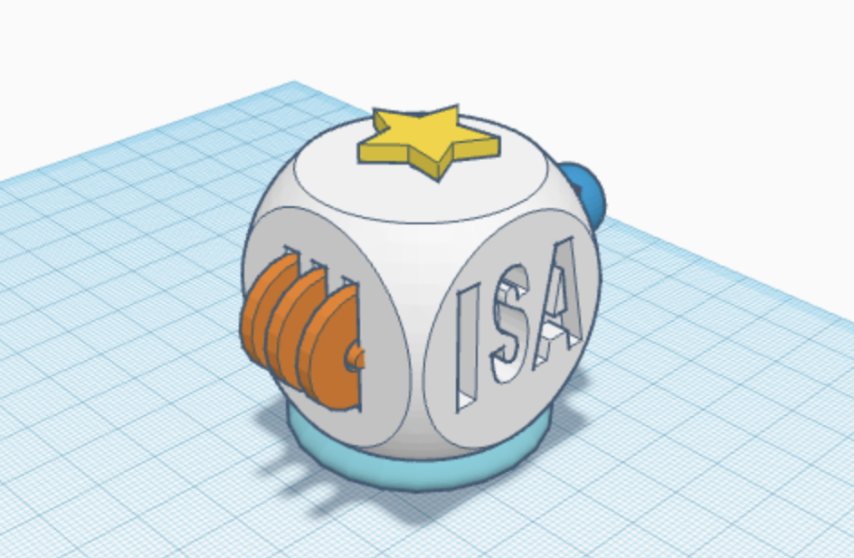
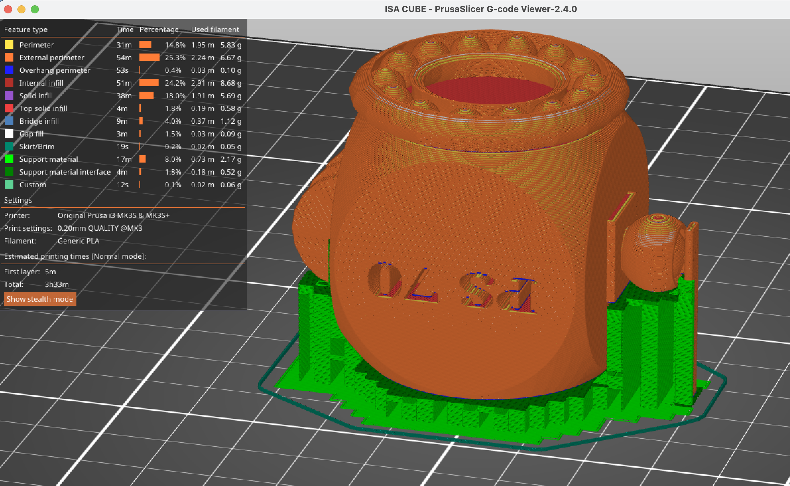
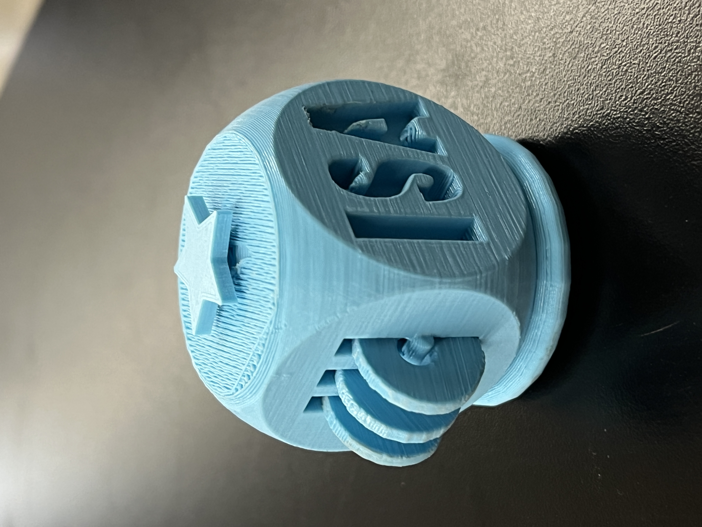
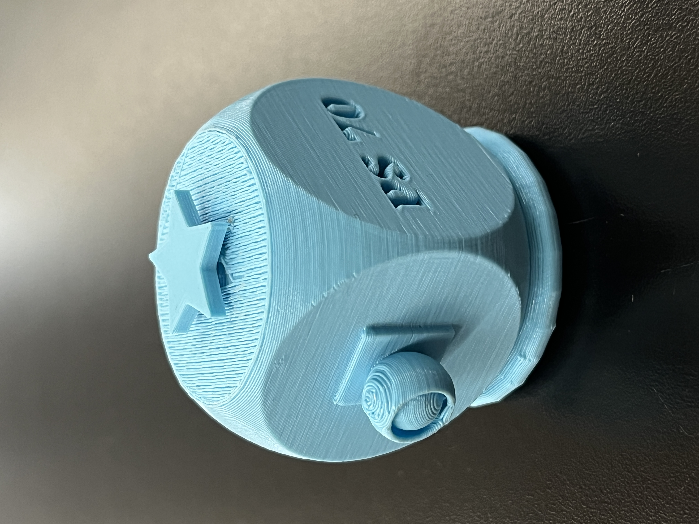
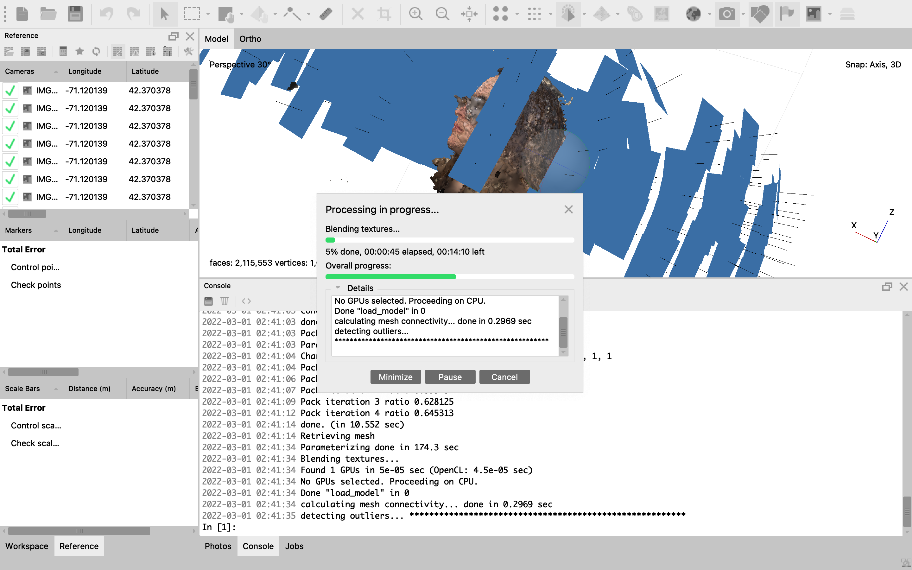
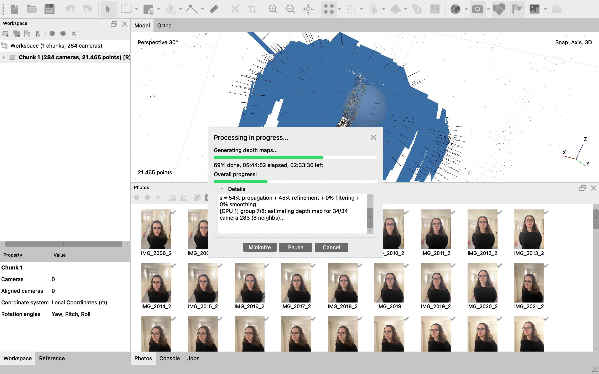
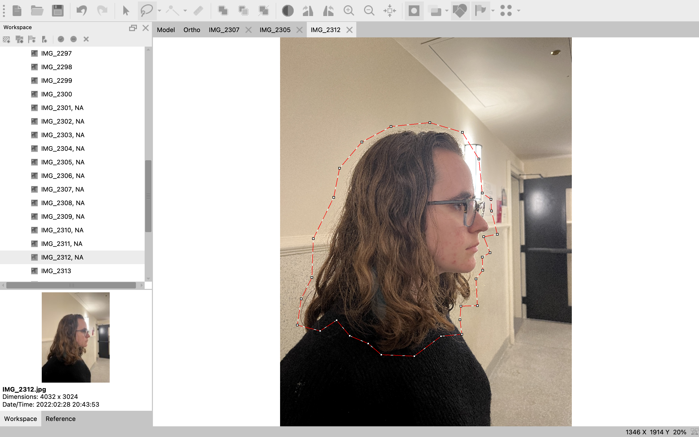
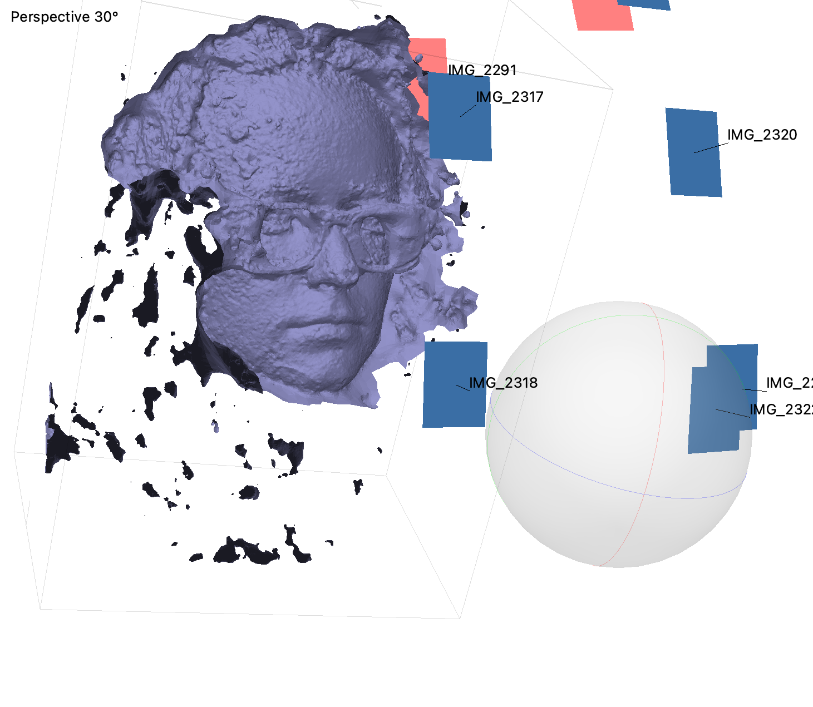

<div class="container-fluid">
<h3 style="text-align: center;"> Week 5: 3D Design & Printing </h3>
<h4 style="color: black;background-color:#6EDCF7;"> Fidget Cube </h4>
<p><img src=../05/cubeinside.png alt="TinkerCad" style="float:right;width:300px;height:auto;"> When we were looking at examples of past prints in class I was immediately drawn to the sphere within a sphere and wanted to experiment with nested geometries. I decided to make a fidget toy, using nested geometries to make moving pieces that required no assembly and couldn’t be made with other fabrication techniques. A quick search of 3d printed fidget toys revealed tons of fun examples but I wanted to try designing something on my own from scratch. I was extra motivated because when I searched 3d printed fidget cubes to see if this was an overdone project, I found a bunch of tutorials for how to make a fidget cube but none that could actually move! They were just for show which I found ridiculous! I was excited to try to tackle this on my own but feeling a bit frustrated with Fusion and nervous at the idea of learning a new complicated program, I decided to try using Tinkercad, which seemed a bit more simple and straightforward. After a lot of trial and error and the help of some Tinkercad tool tutorials, I was able to craft a custom fidget cube with different components on each of the faces. It was a bit of a logic puzzle to try to figure out how to make moving pieces that could be printed successfully (a lot of my first ideas were struck down by gravity) but I had a lot of fun designing the different sides. By the 5th face I was running out of ideas and I had spent a few too many hours on Tinkercad, so I decided to make some decorative sides. I used letters and the hole function to make my name on one side and PS70 on the other. And with that, my design was complete and ready to move to the printing stage!
</p>
<p>The trickiest part of printing was trying to figure out how to control the support structures so it wouldn’t accidentally add filament that was impossible to remove in some of the inner structures I designed for pieces to move. I was struggling with the brush on structures so I ended up flipping my entire model upside down and doing “support on build plate only” so I could have a bit more control over which areas were being supported even with the automatic generation. Then, I went back to my original design and added support shapes where the build plate supports wouldn’t reach. This is where I made a small mistake because I didn’t realize how different the texture ends up being for the support material — it was extremely difficult to remove my manual supports because they printed as real shapes. Still, my first print was successful and I was so excited with the final result. I tried to sand some of the moving parts to make them a bit smoother but it was tricky to reach the important areas so I wasn’t able to make a huge difference. Overall, I was very happy with my fidget cube and it is definitely fun to play with!
</p>
<p> <a download href='../05/Isa Cube B.stl'>Download my STL file</a> and <a download href='../05/ISA CUBE.gcode'>download my gcode file </a>
</p>


<p><img src="../05/resizedcube.gif" alt="Fidget Cube Gif" style="float:right;width:250px;height:auto;">
I’m sure you could make a fidget cube of some kind using other fabrication techniques but a definite pro of 3d printing this was that it required no assembly. Most of the examples I was finding online required some kind of assembly but by designing it specifically to be 3d printed in one go, this method spared me the physical labor. An obvious con is the time it takes to print but again, because I think other techniques would require far more steps and time to put everything together, I think the time might be somewhat comparable. There are also elements of my fidget cube that I don’t think would be possible with other fabrication methods (like the nested geometries - sphere within a sphere) so my specific fidget cube might be uniquely reserved for 3d printing. A slight downside of printing in this way is that the support structures can lead to some messier results (for example: spheres/rotators that aren’t as smooth as I would like) but I think more practice and more careful removal of the support material might solve that problem. And then finally, 3D printing a fidget cube, at least one designed from scratch, does lead to some confusing challenges on the modeling side, so designing a fidget toy with other fabrication techniques might be a bit less thought intensive.
</p>
<center><img src="../05/printingcube.gif" alt="Printing Gif" style="width:200px;height:auto;"><video width="200" height="auto" controls>
<source src="cubevideo.mp4#t=4" type="video/mp4">Your browser does not support the video tag.</video></center>
<h4 style="color: black;background-color:#6EDCF7;"> Scan </h4>

<p> The next part of this week’s assignment was to scan something using photogrammetry so I decided to scan my blockmate Syd’s head. This actually proved incredibly different because I wasn't happy with the results of the phone apps I tried and many of us were struggling with the scanner in the lab, so I attempted the manual photo method. The first roadblock was that only one out of all the listed applications could work on my Mac which was extremely frustrating. Thankfully Metashape Pro seemed to be working. I took a couple hundred pictures of Syd and imported them into the program and followed a tutorial to make the pictures into a model. This ended up taking several hours, with each step taking between 10 minutes and 5 hours to complete. Then, because the world must hate me this week, I could not export the model because the application was in “demo mode.” The program was not free for students, so I requested the 30 day free trial, but there was no way to activate it without restarting the program so I completely lost my finished model. I did take a few progress screenshots so I have included those here.
</p>
<p>
Determined to have a model of Syd, I persisted and started the process over. This time I used far less photos hoping to reduce the wait times. It definitely went faster, but this time around the photo alignment step was not working for the back of her head and any of her hair. Following advice from the internet, I manually drew in a couple dozen masks, hoping this would help, but alas, it did not. The quality was great for the part that it did render (just part of her face), so at least I know I'm on the right track. I returned to the original set of photos, manually removing a few that seemed redundant and started the process over. This time, the results were much better but there was still a frustrating gap on on side of her hair. I'm not sure how to fix this and do better next time, but for now, this is where I will finish my adventures with photogrammetry.
<center><img src="../05/Syd side 1.png" alt="Syd Model" style="width:400px;height:auto;">
<img src="../05/Syd side 2.png" alt="Syd Model" style="width:400px;height:auto;"> </center>
<h4 style="color: black;background-color:#6EDCF7;"> Final Project Progress </h4>
<p>I don't feel quite ready to make a 3d model for my final project, partially because my 3d modeling skills could still use some work before I'm ready for such a big task (and I may need to investigate a better alternative to Fusion or Tinkercad), but mostly because I need to further think through what structures I will use to make my final project. I am thinking I will need two main devices: one to either hold or attach to the canvas/painting surface and another to hold and move the paintbrush. Everything else can hopefully be normal objects like a container for the paint and a regular canvas. I imagine that the canvas attachment/holder will need to be wired to communicate with the machine holding the paintbrush so that I can control how close the paintbrush is to the canvas and the angle of the movement. I am excited to use next week's assignment with electronic input devices to begin working on the first step. My hope is that once I know how I'm seting up my sensors in my paintbrush holder and canvas, I can design a 3d model of the parts I will need to put it all together. I imagine the most important thing will be modeling a tool that can successfully carry and rotate the paintbrush while maintaining a lot of precision and control over the angle of the brush and the pressure applied to the canvas. </p>